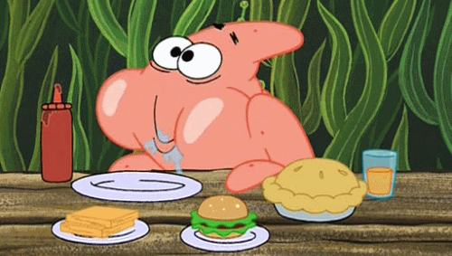

Aguascalientes
Baja california
Baja california sur
Campeche
Chiapas
Chihuahua
Ciudad de México
Coahuila
Colima
Durango
Estado de México
Guanajuato
Guerrero
Hidalgo
Jalisco
Michoacán
Morelos
Nayarit
Nuevo León
Oaxaca
Puebla
Querétaro
Quintana Roo
San Luis Potosí
Sinaloa
Sonora
Tabasco
Tamaulipas
Tlaxcala
Veracruz
Yucatán
Zacatecas

Pan de cazón
El pan de cazón es un plato emblemático de la gastronomía campechana, con una historia arraigada en la cultura y tradiciones locales. Se dice que tiene sus raíces en la época colonial, cuando los pescadores y habitantes locales buscaban formas creativas de aprovechar los recursos disponibles, como el tiburón.
|
| Audio | |
|  |